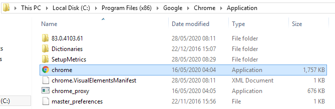
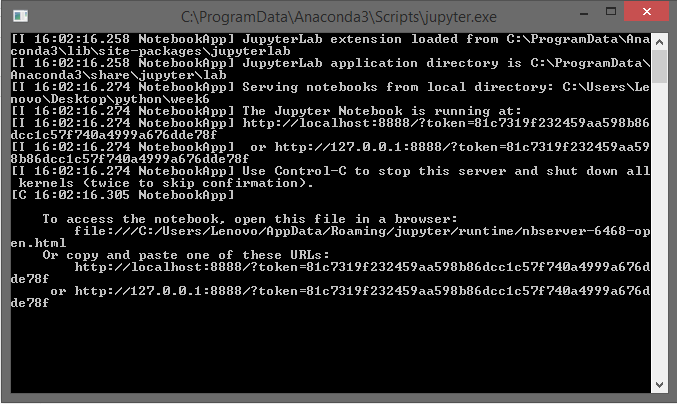

כשאני רושם jopyternotebook במקום שכמו תמיד זה יפתח את הדפדפן, זה פותח קובץ טקסט:
{kind=link}
זה לא נורא ואפשר להעתיק את הקישור משם אבל אשמח לדעת מה עשיתי שזה קרה.

כשאני רושם jopyternotebook במקום שכמו תמיד זה יפתח את הדפדפן, זה פותח קובץ טקסט:
תנסה את זה (מתוך github):
- Create a simple html file (with content as :
<html> </html>).- In file explorer, right-click on this file > properties > opens with > set any browser as default application (to open html files).
- Launch jupyter notebook/lab from console.
- See it opening in browser.
- Profit
ואם לא עובד:
תודה שהקדשת זמן להתייחס לשאלה שלי.
ניסיתי את מה שרשמת פה (וניסיתי לחפש פתרון בעצמי ללא הצלחה).
זה עדיין נפתח כקובץ טקס.
הכל טוב ואני עדיין “נותן בראש” לתרגילים אז יכול להיות יותר גרוע
אבל… ורק אם בא לך לנסות לפתור את זה סתם כחידה אז: (אם לא, תפסיקי לקרוא בשורה הזאת והמון המון תודה שבכלל ענית מלכתחילה)

 --> (כי הם לא הכי מבריקים אבל אי אפשר לכעוס עליהם)
--> (כי הם לא הכי מבריקים אבל אי אפשר לכעוס עליהם)היי. כל הכבוד על ההודעה האחרונה, זה ממש עוזר לי לעזור (ברצינות). קצר, ממוקד עם כמה שיותר פרטים על הבעיה.
אני אצטרך שתפתח את C:\Users\Lenovo.jupyter, ומשם תעתיק לפה את השורה שמתחילה ב־C.NotebookApp.browser.
הנחתי שמתוך התיקיה C:\Users\Lenovo.jupyter התכוונת שאפתח את הקובץ jupyter_notebook_config כקובץ טקסט כמו בהוראות המקוריות שלך.
זה מה שמופיע:
c.NotebookApp.browser = u’C:/Program Files(x86)/Google/Chrome/Application/chrome.exe %s’
(נשאר ככה מהנסיון שלי לתקן בהתאם להנחיותיה של @Ode שבאדיבותה ניסתה לעזור לי וציטטה אותך.
כן, לשם התכוונתי.
בסיידר. אני צריך שתלך לאותו קובץ ותשנה את המרכאות למרכאות כפולות.
צעד נוסף – אני צריך שתבדוק האם בנתיב שכתוב שם באמת יש כרום.
השורה עכשיו:
c.NotebookApp.browser = u"C:/Program Files(x86)/Google/Chrome/Application/chrome.exe %s"
המיקום:

החלון השחור:

כרגע גם הקובץ טקסט שהיה נפתח קודם לכן לא נפתח
בשורה שהעתקת לפה חסר רווח לפני הסוגריים (השווה למה שמופיע בראש התיקייה שצילמת)
נו באמת…
כל זה ובסוף רווח…
כאילו לקבל בבדיקות האוטומטיות שאתה “כישלון חמור” לא היה מספיק 
עצם זה שבכלל קלטת את זה… ומכל הדברים שיש לך לעשות במקום לעזור לי
המון המון תודה!
כי אתה כבר פה וקורא אז ממש בקטנה
קורס מדהים, חברה שלי בדיוק התחילה הסמסטר קורס פייתון באוניברסיטה ושנינו רואים את ההבדל ברמה
והתוספות האחרונות לא נעלמות מהעין
בקיצור, עשית פה משהו…
{kind=link}